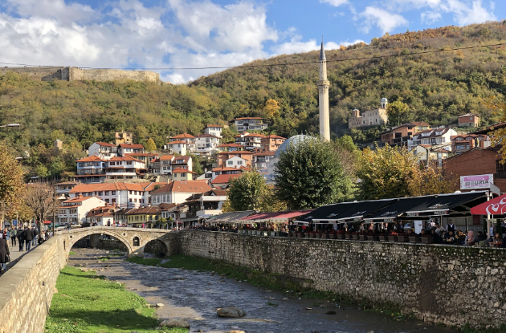

СÑеван СÑ. ÐокÑаÑаÑ: Ocма Ð ÑковеÑ
Stevan St. Mokranjac: Huitième Guirlande
"ÐеÑме Ñа ÐоÑова - Chants du Kosovo "

ÐÑизÑен - Prizren
|
|
|
|
Ðезе ка пеÑмама 1 - 4 -oOo- Liens vers les chants 1 - 4

Ocмa Ð ÑковеÑ
Ðзводи Ð¥Ð¾Ñ Ð Ð¢Ð-а ÐеогÑад. ÐиÑигенÑ: Ðладен ÐагÑÑÑ (маÑоÑ)
Ð¥Ð¾Ñ Ð Ð°Ð´Ð¸Ð¾-ÑелевизиÑе ÐеогÑад Ñед. Ðладен ÐагÑÑÑ (1. маÑ)
NOTE
|
ÐокÑаÑÐ°Ñ Ñе ÑакÑпио "мелогÑаÑÑке" eлемeнÑe за 8. Ð ÑÐºÐ¾Ð²ÐµÑ Ñоком поÑеÑе ÐÑиÑÑини 1896. ÐÑилиÑно жив и ÑиÑмиÑан поÑеÑак âÐанÑм на ÑÑед Ñелоâ Ñ ÑÑпÑоÑноÑÑи Ñе Ñа ÑледеÑом пеÑмом ââ, коÑа делÑÑе ÑпоÑо и Ð¼ÐµÐ»Ð°Ð½Ñ Ð¾Ð»Ð¸Ñно. ТÑеÑа пеÑма âРазгÑана Ñе гÑана ÑоÑгованаâ плени ÑкеÑÑом Ñ ÑонаÑном ÑиклÑÑÑ. Ð ÑÐºÐ¾Ð²ÐµÑ Ñе завÑÑава веÑелом пеÑмом âÐ¡ÐºÐ¾Ñ ÐºÐ¾Ð»Ð¾â. Izvor: Ðикипедиjа |
Mokranjac a recueilli les matériaux mélodiques pour sa 8ème Rukovet lors de sa visite à PriÅ¡tina en 1896. L'air du début, plutôt vif et rythmé, "Džanum na sred selo" contraste avec le chant suivant, "Å to Morava mutna teÄe" au caractère lent et mélancolique. Le troisième chant "Razgrana se grana jorgovana" occupe une place remarquable, celle du scherzo dans le cycle de cette sonate. La Rukovet se termine par la ronde joyeuse "SkoÄ' kolo". Source: Wikipédia |